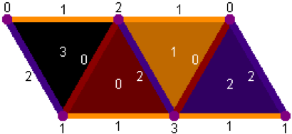

A mathematical investigation of the Tetrahelix and Boerdijk-Coxeter helix, which provides a new formulaic way of producing a continuum of untwisted tetrahelices.
All of the code on this site is released under the GNU General Public License, and I hope you will reuse it.
You can make this page render a wide variety of 3D objects. Pressing the "circle", "sine", "spiral", "cone" or "helix" buttons will render those objects based on an algorithm for following parametric curves.
To create a new parametric curve at present, you would have to hack the code of this page, which we encourage you to do.
By enterring in the text area a short snippet of JavaScript defining an anonymous function which takes an integer and returns either -1, 0, 1, or 2, you can produce an unlimited number of shapes. Just enter such javascript and hig the "GO!" button. -1 means "stop." 0, 1 and 2 desrcibe the face to which to add the new tetrahedron.
Perhaps the simplest recipe is a purely periodic generator. An example is:
(i) => { return i<20 ? [ 2,1,0,1,2][i%5]: -1; }
Which simply cycles through an array of 5 values. You can change the numbers (always keeping them 0,1, or 2---go ahead ant try it.
This is a flattened view of a tetrahedron in the 3D generator, as viewed from the outside. THIS IS A CLOSE APPROXIMATION TO A TORUS:
THIS IS A VERY NICE APPROXIMATION TO A HELIX WITH A TIGHT CAVITY
THIS IS LIKE K = 9 BUT SIGNIFICANTLY MORE OPEN
FROM K = 9 to K = 18 you produce helixes of various torsion more or less smoothly.
THIS PRODUCES A NICE BROADLY OPEN HELIX
THIS ALSO PRODUCES A NICE BROADLY OPEN HELIX, EVENLARGER
“Nearly Flat Sawtooth”
Alternate a/b = true; 2b = .95
These numbers (put into the same was as above for 2b, produce different polygonal toriods.)Triangle: 0.29
Square: 0.648
Pentagon: 0.835
Hexagon: 0.95
Setting 2b to 1.414 produces a straight "beam" different than the Equitetrabeam.
In fact, this method is a basic mechanism for producing toroidal forms are any lengh, which is very useful.
Modify edge lengths thusly produces a square "box beam":
This setting produces the perfectly triangular "Equitetrabeam"0b = 2a = 1.1547 (2/sqrt(3)
This setting produces a funny "sqare-hole helix" whose central cavity is square: 2a = 0b = 1.1547, alternate ab = true
This produces a similar "octagonal helix": 1a = 1b = 1.1547, alternate ab = true